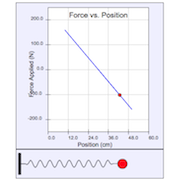

This model simulates Hooke's law. Students can adjust the position of a spring, and observe how the force on the bob changes with position. Since Hooke's law is dependent on position, the acceleration of the system is no longer constant--a new phenomenon!